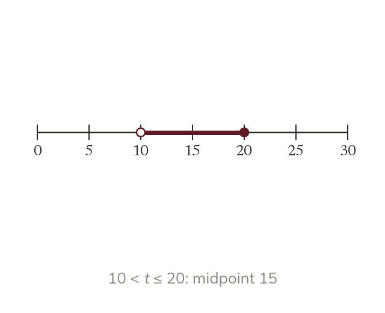

Continuous classes
Continuous classes are written as inequalities, with no gaps. Every value falls into exactly one class. A class midpoint is halfway between its boundaries.
Continuous data can take any value in a range, so its classes are written as inequalities. Inequality boundaries leave no gaps, so every value falls into exactly one class. The midpoint of a class is halfway between its two boundaries.